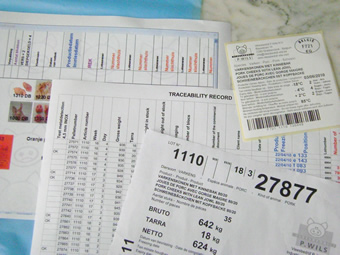
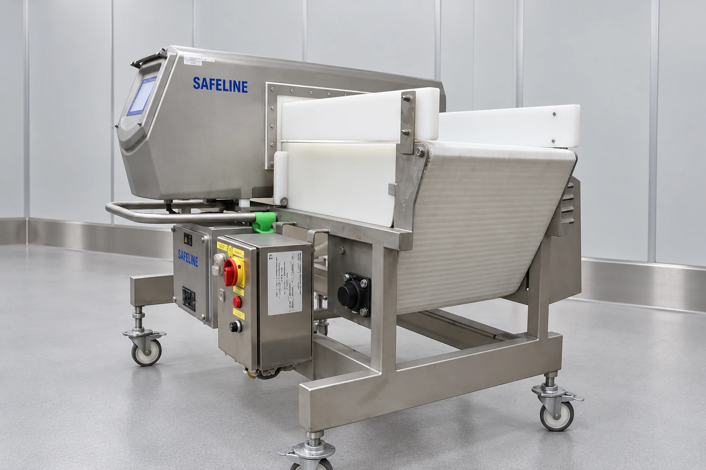
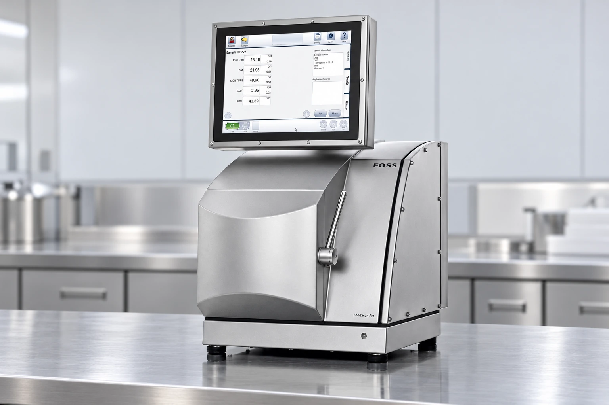

Certificates.

BRCGS Food Safety
AA+ · Issue 9
Certified to the BRCGS Global Standard for Food Safety following an unannounced audit.
View 2026 certificatePDF, opens in a new tab
Beter Leven
Processor · 1-star pork
The Beter Leven (Better Life) label is an animal welfare scheme. Wils is certified as a processor for 1-star pork. This certification applies only to products supplied under the label.
View 2026 certificatePDF, opens in a new tabACS
Self-checking system
Our self-checking system is based on sector guide G-018. The certificate also covers module GM1 for exports to third countries.
View 2026 certificatePDF, opens in a new tabOur quality controls.
Vleesbedrijf P. Wils uses an internal quality system and a self-checking system for its cutting plant, based on sector guide G-018 and HACCP principles.
Explore our productionTraceability
Record-keeping and product labelling support the traceability of our products.

Product checks
Metal detection
Metal detection helps identify metal particles in the product.

Composition and FoodScan
FoodScan uses near-infrared light to analyse meat samples. It can measure fat, moisture and protein content, among other parameters.

Quality team.
What to include in your enquiry
- Product name or item code
- The documents you need
- Any requirements for your intended use
For questions about a delivery, include the delivery reference and the details on the product label.